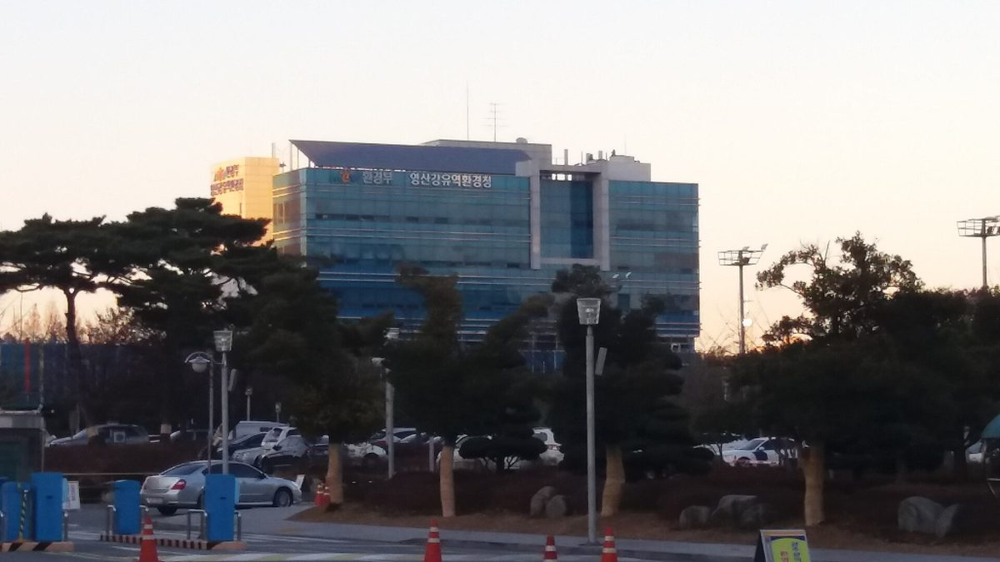

영산강유역환경청, 상수원관리지역 햇빛소득마을 9곳 등 6개 시군 11개 사업에 수계기금 92억 원 지원

2027년 새로 도입하는 재생에너지 특별지원사업…햇빛소득마을 73억 원·가구와 마을 공동시설 히트펌프 19억 원, 공모 예산 264억 원 중 남은 몫은 연내 추가 공모
영산강유역환경청이 상수원 규제를 받는 마을 주민의 소득을 늘리기 위해 햇빛소득마을 조성 등 재생에너지 사업에 수계기금 92억 원을 지원한다. 환경청은 내년에 새로 도입하는 '2027년도 상수원관리지역 주민 소득증대 재생에너지 특별지원사업' 대상으로 6개 시군 11개 사업을 골랐다. 상수원관리지역 햇빛소득마을 9곳 조성에 73억 원, 개별 가구 112곳의 공기열 히트펌프 보급에 16억 원, 마을 공동시설 10곳의 히트펌프 설치에 3억 원이 들어간다. 환경청은 7월부터 순천·광양·담양·보성·화순·장흥·강진·영암 8개 시군을 대상으로 공모해 23개 사업을 받았고, 내·외부 전문가 7명으로 꾸린 심사위원회가 사업계획의 구체성과 사업비 적정성, 사후관리 방안을 따져 대상을 정했다. 당초 공모 예산 264억 원 가운데 92억 원만 선정돼 남은 사업비는 연내 추가 공모로 채울 계획이며, 지역 전력계통이 포화된 점을 감안해 행정안전부 햇빛소득마을추진단과 함께 ESS를 활용한 계통 연결 방안을 찾고 있다. 김영민 영산강유역환경청장은 재생에너지로 주민 소득을 높이고 마을이 함께 성장할 기반을 만든다는 데 의미가 있다며 지원을 이어 가겠다고 말했다.
시민에너지 관점
공모 예산 264억 원 가운데 3분의 1 남짓인 92억 원만 선정됐다는 것은 돈보다 준비된 마을이 모자랐다는 뜻으로 보인다. 계통이 포화된 지역에서 마을 발전소가 제대로 돌아갈 수 있느냐는 걱정도 크지만, ESS를 묶어 계통 문제를 함께 풀겠다는 방향은 규제 지역 주민에게 실제 소득을 남기는 길이 될 수 있다. 상수원 규제로 오랫동안 개발을 참아 온 주민이 발전소의 공동 주인이 되면, 지원금은 한 번 쓰고 끝나는 보조가 아니라 해마다 소득을 낳는 마을 자산이 된다. 환경청과 시군은 추가 공모 전에 마을의 사업계획 작성과 계통 접속 상담부터 도와, 준비가 덜 된 마을이 기회를 놓치지 않게 해야 한다.
출처: 남도방송 2026-10-23 조승화 원문 보기
栄山江流域環境庁、上水源管理地域の太陽光所得村9か所など6市郡11事業に水系基金92億ウォンを支援
2027年に新設する再生可能エネルギー特別支援事業…太陽光所得村に73億ウォン、世帯と村の共同施設のヒートポンプに19億ウォン、公募予算264億ウォンの残りは年内に追加公募
栄山江流域環境庁が、上水源の規制を受ける村の住民の所得を増やすため、太陽光所得村づくりなど再生可能エネルギー事業に水系基金92億ウォンを支援する。環境庁は来年新たに導入する「2027年度上水源管理地域住民所得増大再生可能エネルギー特別支援事業」の対象として、6市郡の11事業を選んだ。上水源管理地域の太陽光所得村9か所の整備に73億ウォン、個別世帯112戸への空気熱ヒートポンプ普及に16億ウォン、村の共同施設10か所へのヒートポンプ設置に3億ウォンが充てられる。環境庁は7月から順天・光陽・潭陽・宝城・和順・長興・康津・霊岩の8市郡を対象に公募して23事業の申請を受け、内外の専門家7人で構成する審査委員会が事業計画の具体性、事業費の妥当性、事後管理策を評価して対象を決めた。当初の公募予算264億ウォンのうち92億ウォン分しか選ばれなかったため、残りの事業費は年内の追加公募で埋める計画で、地域の電力系統が飽和していることを踏まえ、行政安全部の太陽光所得村推進団とともにESSを活用した系統接続策を探っている。キム・ヨンミン栄山江流域環境庁長は、再生可能エネルギーで住民の所得を高め、村が共に成長できる基盤をつくる点に意義があるとし、支援を続ける考えを示した。
市民エネルギーの視点
公募予算264億ウォンのうち3分の1余りの92億ウォン分しか選ばれなかったことは、資金よりも準備の整った村が足りなかったことを示しているとみられる。系統が飽和した地域で村の発電所がきちんと動くのかという心配も大きいが、ESSを組み合わせて系統問題を共に解こうという方向は、規制地域の住民に実際の所得を残す道になりうる。上水源の規制で長く開発を我慢してきた住民が発電所の共同所有者になれば、支援金は一度使えば終わる補助ではなく、毎年所得を生む村の資産になる。環境庁と市郡は追加公募の前に、村の事業計画づくりと系統接続の相談から支え、準備の整っていない村が機会を逃さないようにすべきだ。
出典: Namdo Broadcasting 2026-10-23 Cho Seung-hwa 原文を読む
荣山江流域环境厅向水源管理地区9个阳光收入村等6个市郡11个项目提供92亿韩元水系基金
2027年新设的可再生能源特别支援项目…阳光收入村73亿韩元，农户和村庄公共设施热泵19亿韩元，264亿韩元招募预算的剩余部分将于年内追加招募
韩国荣山江流域环境厅为增加受水源保护管制的村庄居民收入，将向建设阳光收入村等可再生能源项目提供92亿韩元水系基金。环境厅从明年新推出的"2027年度水源管理地区居民增收可再生能源特别支援项目"中，选定了6个市郡的11个项目。其中，建设水源管理地区9个阳光收入村投入73亿韩元，为112户家庭普及空气源热泵投入16亿韩元，为10处村庄公共设施安装热泵投入3亿韩元。环境厅自7月起面向顺天、光阳、潭阳、宝城、和顺、长兴、康津、灵岩8个市郡公开招募，共收到23个项目申请；由7名内外部专家组成的评审委员会从项目计划的具体性、项目费用的合理性和后续管理方案等方面进行评估，确定了支援对象。原定招募预算为264亿韩元，但此次只选出92亿韩元的项目，剩余经费计划在年内追加招募；考虑到当地电网已经饱和，环境厅正与行政安全部阳光收入村推进团一起探索利用储能系统（ESS）接入电网的方案。荣山江流域环境厅厅长Kim Young-min表示，利用可再生能源提高居民收入、为村庄共同成长打下基础具有重要意义，将继续提供支援。
市民能源视角
264亿韩元招募预算中只选出三分之一多一点、即92亿韩元的项目，看来说明缺的不是钱，而是准备好的村庄。人们也很担心，在电网饱和的地区，村庄电站能否正常运转；但结合储能系统共同解决电网问题的方向，有望为管制地区居民留下实实在在的收入。因水源保护而长期忍受开发限制的居民一旦成为电站的共同主人，补助金就不再是用一次就结束的补贴，而会变成每年产生收入的村庄资产。环境厅和各市郡应在追加招募之前，先帮助村庄编写项目计划、提供电网接入咨询，让准备不足的村庄不错失机会。
来源: Namdo Broadcasting 2026-10-23 Cho Seung-hwa 查看原文
Yeongsan River Basin Environmental Office grants 9.2 billion won from its water system fund to 11 projects in 6 cities and counties, including 9 Sunlight Income Villages in water-source areas
A renewable energy support programme launching in 2027 puts 7.3 billion won into Sunlight Income Villages and 1.9 billion won into heat pumps for homes and village facilities; the rest of the 26.4 billion won budget goes to a second call this year
The Yeongsan River Basin Environmental Office will provide 9.2 billion won from its water system fund for renewable energy projects, including Sunlight Income Villages, to raise the incomes of residents in villages restricted by drinking-water source rules. For the "2027 renewable energy special support programme to raise incomes of residents in water-source management areas," which launches next year, the office selected 11 projects in 6 cities and counties. Of the total, 7.3 billion won will go to building 9 Sunlight Income Villages in water-source management areas, 1.6 billion won to supplying air-source heat pumps to 112 individual households, and 300 million won to installing heat pumps at 10 shared village facilities. The office opened the call in July to 8 cities and counties — Suncheon, Gwangyang, Damyang, Boseong, Hwasun, Jangheung, Gangjin and Yeongam — and received 23 applications; a review committee of 7 internal and external experts assessed how concrete the plans were, whether costs were reasonable and how the facilities would be managed afterwards. Because only 9.2 billion won of the original 26.4 billion won budget was selected, the office plans a further call this year for the remainder, and since the local grid is saturated it is working with the Ministry of the Interior and Safety's Sunlight Income Village task force on ways to connect using energy storage systems (ESS). Kim Young-min, head of the office, said the programme is meaningful because it uses renewable energy to raise residents' incomes and lay a foundation for villages to grow together, and that support will continue.
Citizen Energy View
That only 9.2 billion won, a little over a third of the 26.4 billion won budget, was selected suggests the shortage was not money but villages ready to apply. There is real concern about whether village power plants can run properly where the grid is saturated, but the plan to tackle grid limits together using ESS could be a way to leave real income with residents of restricted areas. If residents who have long put up with development limits to protect drinking water become joint owners of power plants, the grants become not one-off subsidies but village assets that earn income every year. Before the next call, the office and local governments should first help villages write project plans and get advice on grid connection so that less-prepared villages do not miss out.
Source: Namdo Broadcasting 2026-10-23 Cho Seung-hwa Read the original